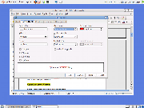
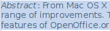
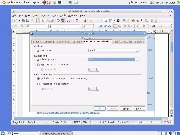
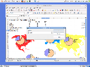
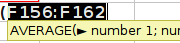

Nouveautés OpenOffice.org 3.1
Table des matières
- 1 Améliorations générales
- 2 Writer
- 3 Calc
- 4 Diagramme
- 5 Impress
- 6 Base
- 7 Internationalisation et localisations
Améliorations générales
Amélioration du rendu d'écranOpenOffice.org utilise maintenant une technique appelée « anticrénelage » (anti-aliasing) pour améliorer le rendu à l'écran (lignes, cercles, etc). Vous devriez noter une amélioration immédiate de la clarté des graphiques -- particulièrement dans les diagrammes où qu'ils apparaissent dans OpenOffice.org.Ceci a également amélioré la « géométrie graphique », par exemple quand vous superposez une forme sur une autre pour créer une forme combinée. Voyez cet article (en anglais) sur le blog GullFOSS pour plus de détails. |
||
Effectuer des « glisser-déplacer » plus facilement avec les graphiquesQuand vous glissez un objet dans un dessin à travers l'écran, OpenOffice.org ne montre maintenant que « l'ombre » de celui-ci, au lieu d'une simple ligne pointillée. Ceci facilite considérablement le placement précis d'images dans des dessins complexes. |
 |
 |
Verrouillage des fichiers amélioréSi vous travaillez sur un réseau où plusieurs personnes peuvent avoir accès au même document, le verrouillage de fichiers évite l'écrasement accidentel des changements effectués par d'autres personnes. Comme OpenOffice.org fonctionne sous différents systèmes d'exploitation, il ne peut se reposer exclusivement sur ceux-ci pour prévenir les utilisateurs quand un document est ouvert. OpenOffice.org a maintenant son propre mécanisme, ce qui lui permet d'avoir un verrouillage stable quand celui du système d'exploitation a échoué. Il permet également à OpenOffice.org de montrer qui a déjà ouvert le document. |
 |
 |
SurlignageOpenOffice.org autorise maintenant le surlignage, en plus du soulignage classique, avec la même gamme d'options que le soulignage (type de lignes, couleurs). |
 |
Writer
Surbrillance atténuéeLe texte sélectionné est maintenant affiché avec une couleur d'arrière plan attenuée, plutôt qu'en vidéo inverse. Plus agréable à l'oeil, et plus facile à utiliser. |
 | |
Amélioration des notesIl est maintenant possible pour un groupe de rédacteurs de conduire une conversation structurée par le biais des notes, en faisant un clic-droit sur une note et en choisissant « répondre »Par ailleurs, la fonction recherche tient désormais compte du texte des notes. |
 |
|
Intégration plus approfondie du vérificateur grammaticalAvec OpenOffice.org 3.1, le cadre d'application pour vérificateur grammatical a été étendu pour permettre l'accès à des extensions comme LanguageTool depuis le menu Outils > Orthographe et Grammaire. Notez que OpenOffice.org possède un cadre d'application pour vérificateur grammatical, mais ne propose pas lui-même de vérificateur intégré. Un vérificateur peut désormais être installé en tant qu'extension. |
 |
 |
Niveaux de plans dans les paragraphesLes rédacteurs de documents aux formats d'ordonnancement complexes peuvent maintenant définir un nouveau paragraphe ainsi que l'attribut « Niveau de plan ». Ceci transforme un paragraphe normal en titre, indépendemment d'un style de liste ou de paragraphe. |
 |
Calc
Renommer les feuilles avec un double-clicDouble-cliquer dans l'onglet d'une feuille Calc affiche maintenant la boite de dialogue Renommer. Dans les versions précédentes, il fallait un clic-droit sur l'onglet et choisir l'option Renommer du menu contextuel. Ce changement facilite l'accès à cette fonction fréquemment utilisée. |
 |
 |
Ascenseur de zoom dans la barre d'étatLe nouvel ascenseur de zoom dans la barre d'état de Writer a été très apprécié dans OpenOffice.org 3.0. Avec OpenOffice.org 3.1, il est également disponible dans Calc, permettant un contrôle rapide et précis du niveau de zoom pour l'affichage à l'écran. |
 |
 |
Aide mémoire formulesCalc affiche maintenant la syntaxe de la formule que vous saisissez, pendant toute la saisie, juste à droite de la cellule modifiée pour vous servir d'aide-mémoire pratique sur l'utilisation de la formule. |
 |  |
Tri amélioréIl y a eu nombre de changements pour rendre le tri plus logique, cohérent et puissant. La première fois que vous utilisez la fonction (également disponible à partir de la barre d'outils), Calc va supposer que vous voulez trier sur la colonne où est le curseur. Les boutons de la barre d'outils utilisent maintenant la même logique que la boîte de dialogue Tri pour déterminer si une plage a des en-têtes de colonnes. Enfin, quand vous triez, Calc se souvient maintenant de l'ordre original des entrées avec des clés de tri équivalentes. |
 |
|
Changements dans les formulesUne nouvelle fonction de feuille de calcul EUROCONVERT pour les conversions entre les anciennes monnaies de la zone européenne, avec l'import de et l'export (binaire) vers les formats de fichier MS-Excel.Nouvelles fonctions de feuilles de calcul GAMMA, KHIDEUX, et KHIDEUX.INVERSE, et modifications des fonctions LOI.GAMMA, LOI.KHIDEUX, et LOI.CHIDEUX.INVERSE pour les analyses statistiques. La fonction LOI.BETA possède maintenant un paramètre optionnel permettant de choisir de calculer ou bien la densité de probabilité (valeur FAUX) ou bien la fonction de répartition (valeur VRAI). Ce paramètre est défini par défaut à VRAI pour des raisons de compatibilité. |
||
Améliorations des performancesDes goulots d'étranglements de la performance dans Calc ont été supprimés avec pour résultats des améliorations surprenantes dans deux cas de tests : de 24 secondes à 1,2 secondes dans le premier cas ; et de une heure à approximativement 12 minutes dans le second cas. Ceci fait partie des efforts continus pour améliorer les performances de Calc. |
||
Diagrammes
Positionnement flexible des axesLes diagrammes d'OpenOffice.org offrent maintenant une plage d'options pour le positionnement des axes. Cette fonctionnalité était très demandée, notamment dans le domaine de l'enseignement. |
 |
 |
Prise en compte des données manquantesVous pouvez maintenant également choisir la façon dont OpenOffice.org traite les points de données manquantes -- Laisser un espace, remplacer par zéro ou interpoler la valeur manquante.Pour de plus amples informations sur les changements dans les diagrammes, veuillez vous référer à cet article sur le blog GullFOSS, en anglais. |
 |
 |
Impress

{kind=link}
{kind=link}
{kind=link}
{kind=link}
{kind=link}
{kind=link}
Base
Coloration syntaxique SQLQuand vous écrivez du SQL, Base utilise maintenant une coloration syntaxique spécifique. Il va également « flasher » pour indiquer des parenthèses correspondantes. Vous pourrez plus facilement identifier les fautes de frappe, les erreurs dans votre syntaxe SQL, etc.Vous pouvez créer votre propre système de coloration à l'aide du menu Outils -> Options -> OpenOffice.org -> Apparence -> Mise en évidence de la syntaxe SQL, et choisir votre propre police depuis le menu Outils -> Options -> OpenOffice.org -> Polices. |
||
Des applications macros dans BaseAvec OpenOffice.org 3.1, il est possible de construire une « application de base de données » complète à l'aide de macros et de scripts à l'intérieur d'un document Base (.odb). Cette fonctionnalité existait déjà dans d'autres types de documents.Cela signifie que les macros peuvent maintenant être exécutées soit à partir du document lui-même, ou d'un de ses sous-composants : formulaire, rapport, création de table, création de requêtes, création de relation, vue de table. C'est une amélioration importante pour les personnes souhaitant créer des « applications intégrées » complètes dans Base. Note : Les développeurs créant des applications pour Base sont invités à lire l'article wiki (voir ci-dessous) pour des informations importantes sur d'autres fonctions développeurs, et sur les questions de rétro-compatibilité. Pour de plus amples détails sur tous les changements dans Base, veuillez lire le wiki (anglais). |
||
Internationalisation et localisations
Page originale en anglais : http://www.openoffice.org/dev_docs/features/3.1/index.html
Traduction : Dominique Pautrel et Jean-Christophe Helary
Retour à la page d'informations
OpenOffice.org
native tongue concept
and
francophone
project are built for you with pride by Guy Capra (Alomphega).
This fr project is also led and maintained with pride too by Jean-Baptiste Faure.
This fr project is also led and maintained with pride too by Jean-Baptiste Faure.